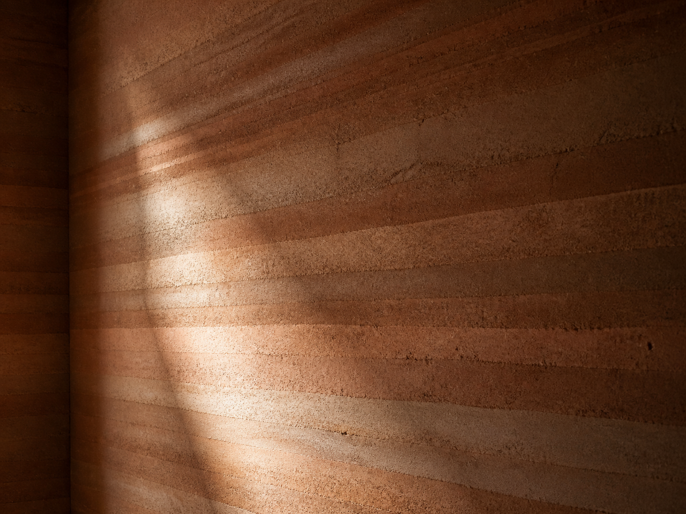
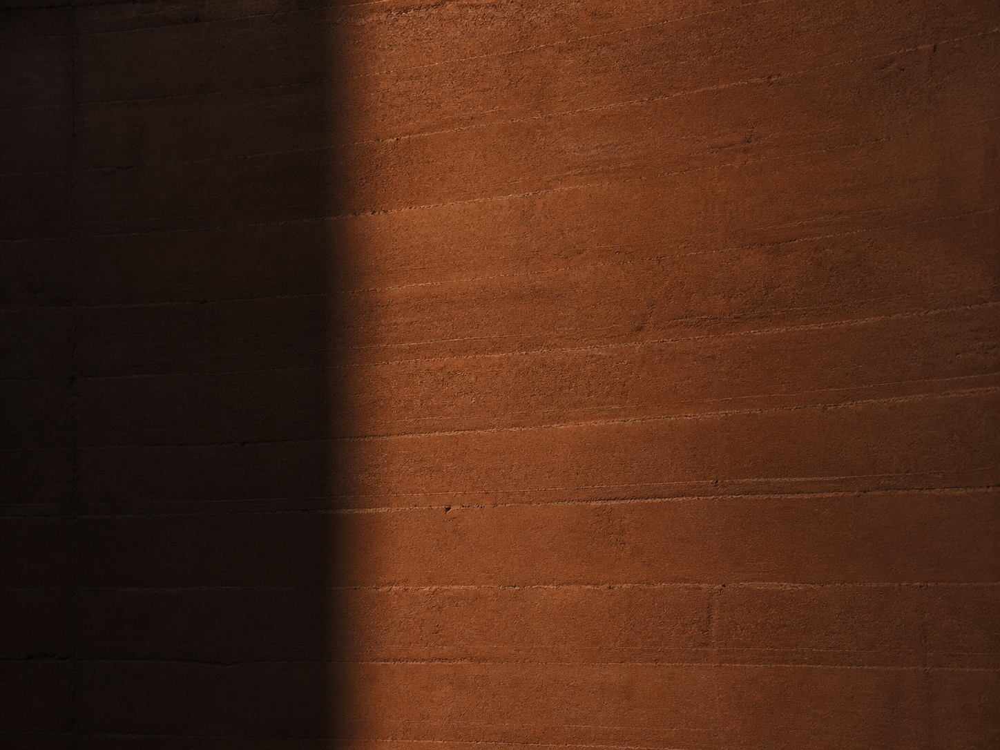
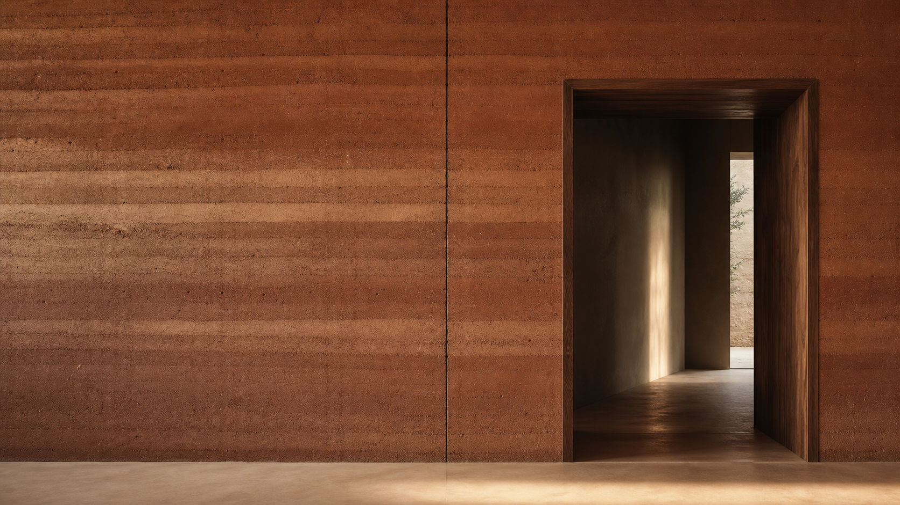
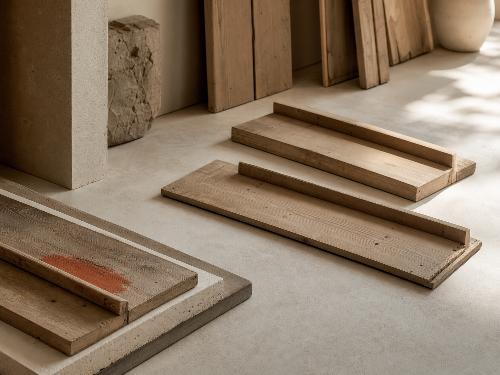
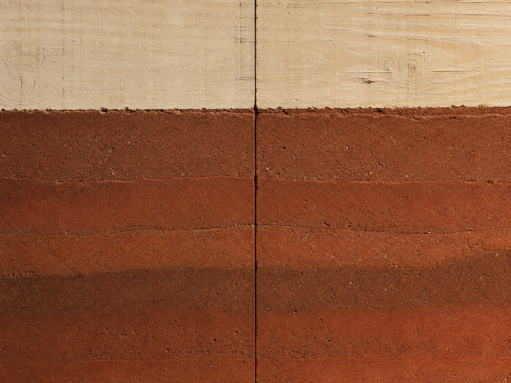
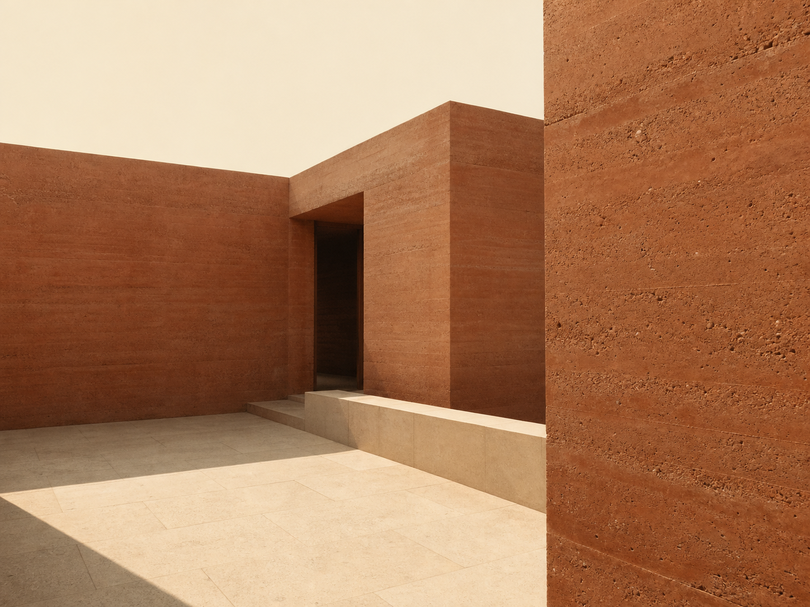
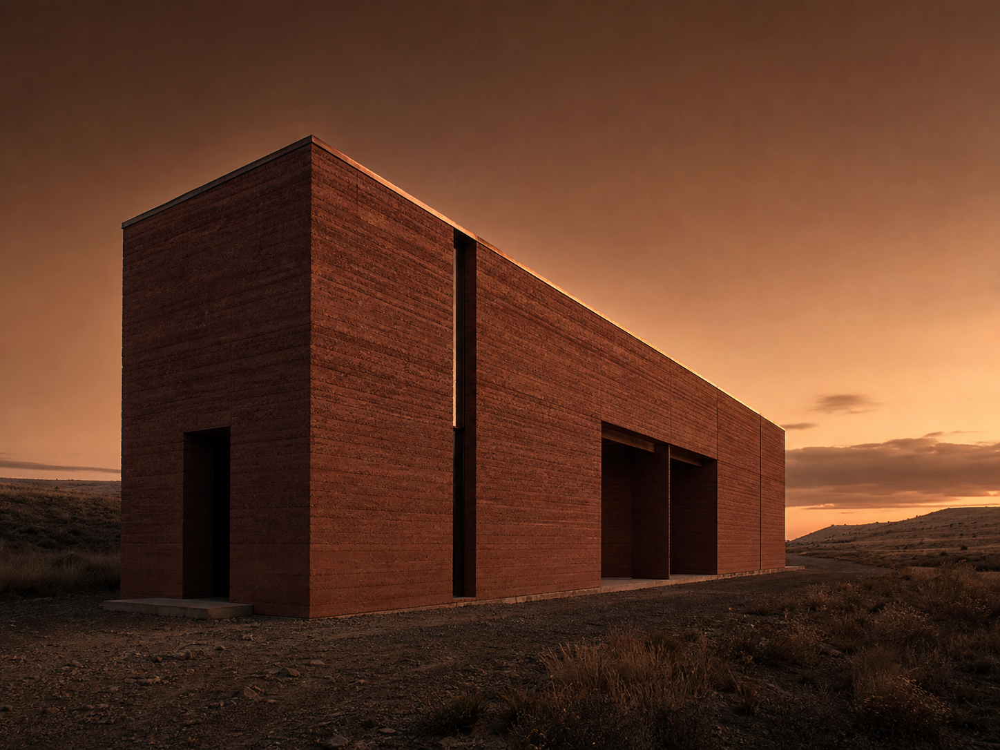
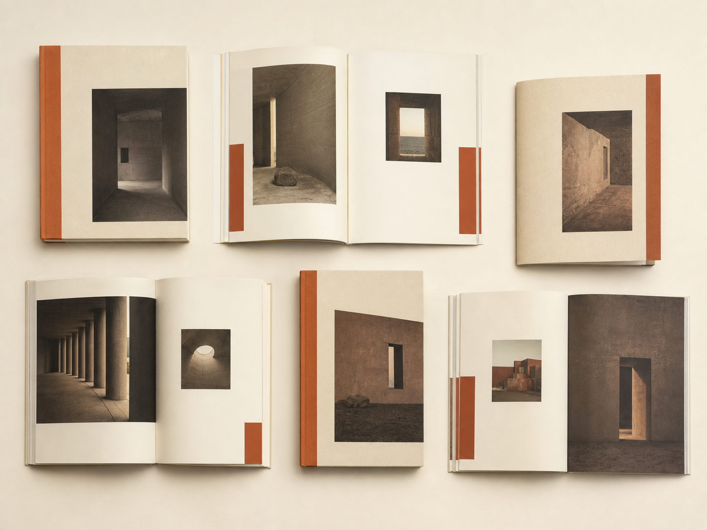
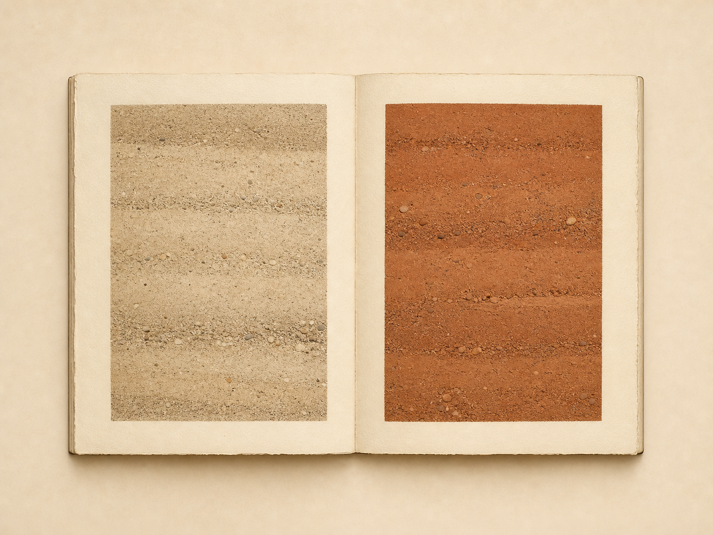

Selected walls, mouldworks, and journal volumes from the plateau. Each cell of the grid splits on the same vertical the hero seam describes. Read across, then down.









| 2018 | Strata of the village wallKaraman |
|---|---|
| 2020 | Konya Reading RoomKonya |
| 2022 | Mouldwork atlas, 1:1Workshop |
| 2023 | Anatolian field houseSille |
| 2026 | CompactionThe plateau |
We publish on a quarter, never sooner, never later. The next volume is set in a moulding shed on the high plateau, drying as you read this.
The next volume arrives in October.